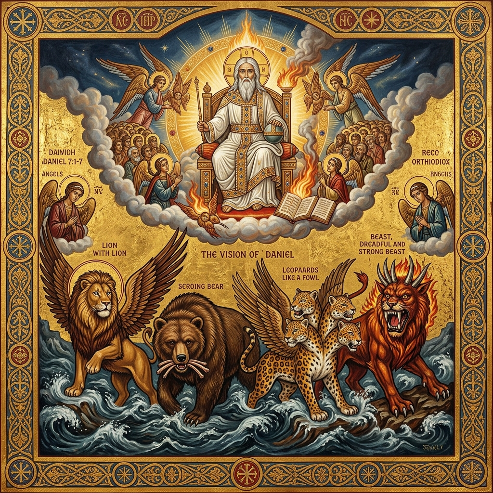
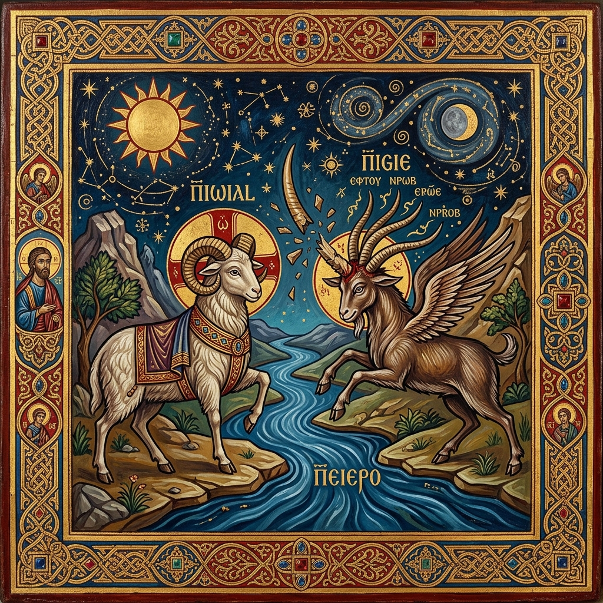
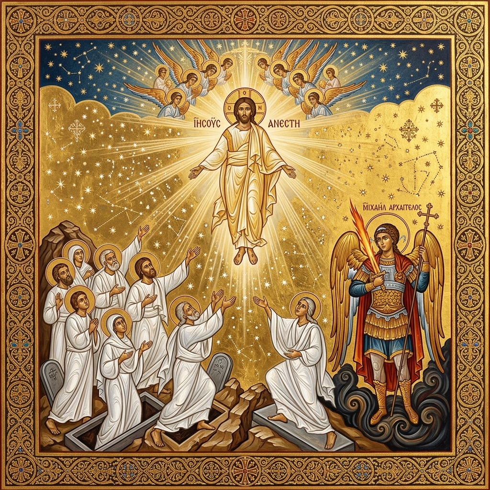
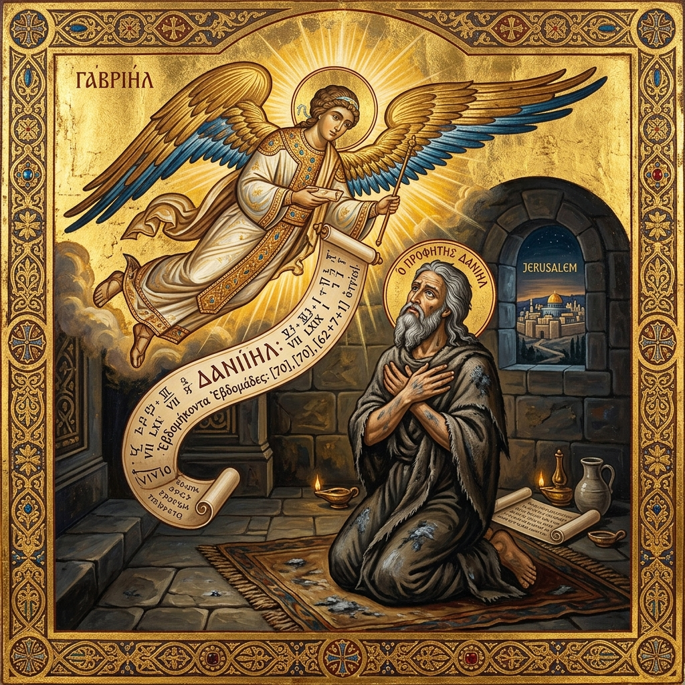
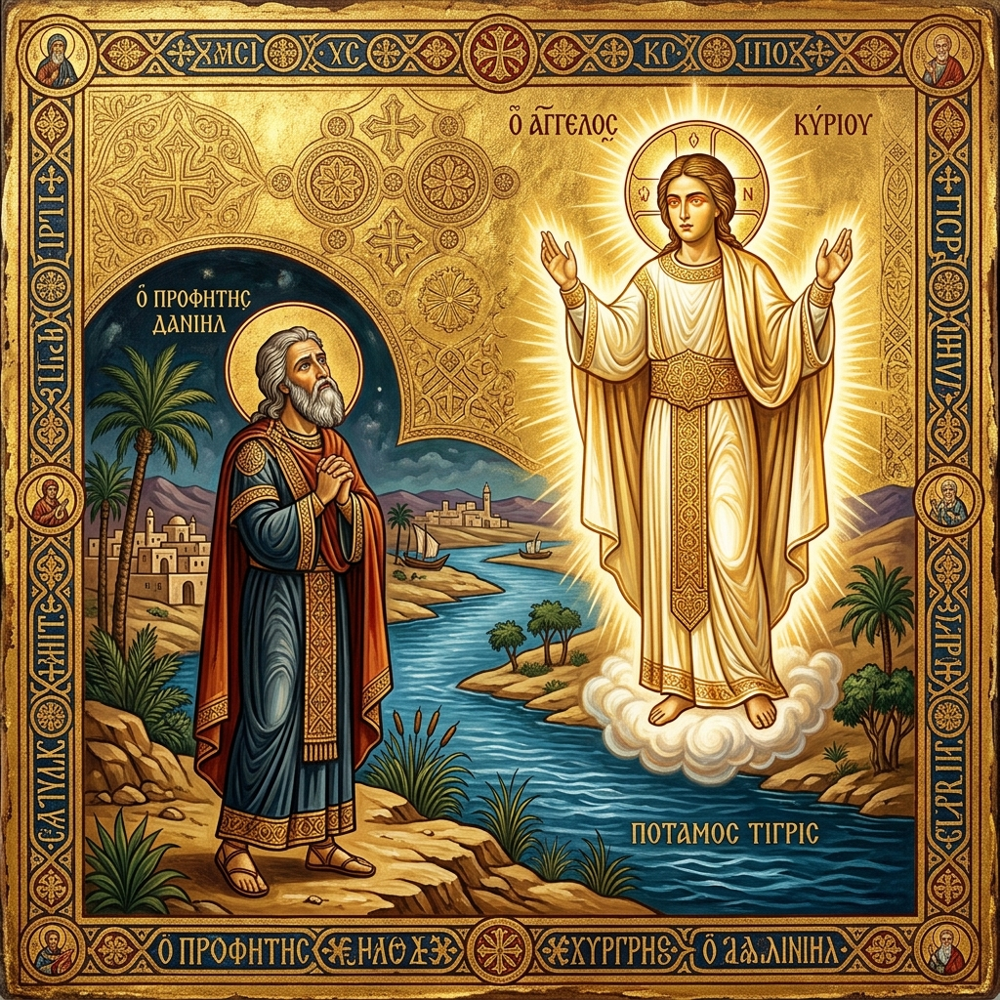
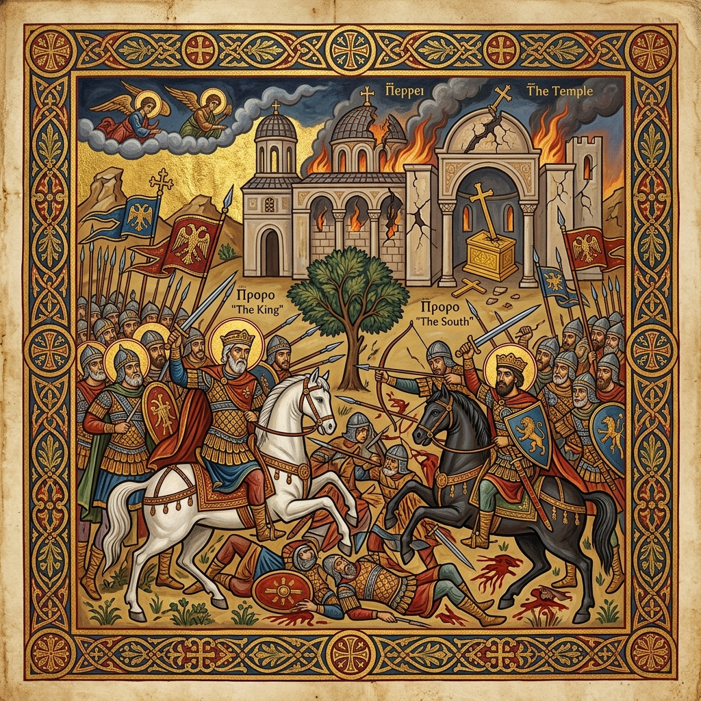

A Coptic Orthodox Study
Chapters 7 — 12
An in-depth exploration of Daniel's apocalyptic visions — the four beasts, the seventy weeks, the wars of kings, and the promise of resurrection — through the lens of the Church Fathers and the Coptic Orthodox Tradition.
At a Glance
Chapter 7
Four great beasts rise from the sea representing successive empires. The Ancient of Days takes His throne and one "like the Son of Man" receives an everlasting kingdom.
Chapter 8
A ram with two horns (Medo-Persia) is overthrown by a goat with one great horn (Greece). The horn breaks and four kingdoms emerge, followed by a little horn of great wickedness.
Chapter 9
Daniel prays with fasting and repentance. The Archangel Gabriel reveals the prophecy of 70 weeks — a divine timetable pointing to the coming of the Messiah and His atoning sacrifice.
Chapter 10
By the Tigris River, Daniel beholds a heavenly being of overwhelming glory. The angel reveals the reality of spiritual warfare between heavenly principalities.
Chapter 11
A detailed prophecy of the wars between the Ptolemaic (South) and Seleucid (North) kingdoms, climaxing with a "contemptible person" who desecrates the Temple — a type of the Antichrist.
Chapter 12
The Archangel Michael rises to protect God's people. The dead are raised — some to everlasting life, some to shame. Daniel is told to seal the book until the time of the end.
Prophetic Timeline

The Lion with Eagle's Wings
Nebuchadnezzar's kingdom — majestic yet beastly. Its wings were plucked and it was given a human heart, symbolising humbling by God (cf. Daniel 4).
c. 605–539 BC
The Bear / The Ram
Raised on one side with three ribs in its mouth. The ram with two horns — one higher than the other — representing the dominance of Persia over Media.
c. 539–331 BCThe Leopard / The Goat
A leopard with four wings and four heads — the swift conquest of Alexander the Great. The goat's great horn breaks and four kingdoms emerge: Ptolemaic Egypt, Seleucid Syria, Pergamon, and Macedonia.
c. 331–168 BCThe Little Horn
The "little horn" of Daniel 8 — king of the Seleucid dynasty, he desecrated the Temple, set up the abomination of desolation, and persecuted the faithful. A historical type of the Antichrist according to the Fathers.
c. 175–164 BCThe Terrifying Fourth Beast
Dreadful, terrible, and exceedingly strong with iron teeth. It crushed and devoured. During this empire, the Messiah was born, fulfilling the 70 weeks prophecy.
c. 63 BC – AD 476The Anointed One
The fulfilment of Daniel 9:24–26 — "to finish transgression, make an end of sins, make reconciliation for iniquity, and bring in everlasting righteousness." The Messiah was "cut off, but not for Himself."
c. AD 30–33Desolation of the Temple
"The people of the prince who is to come shall destroy the city and the sanctuary" (Daniel 9:26). The Temple was destroyed by Titus' Roman legions, confirming the prophetic word.
AD 70
The Time of the End
The Archangel Michael shall arise. "Many of those who sleep in the dust of the earth shall awake" (Daniel 12:2). The wise shall shine like the stars forever — the hope of the Orthodox believer.
At the consummation of all thingsIn-Depth Study
Chapter 7
In the first year of Belshazzar, Daniel sees four great beasts rising from the sea — representing four successive world empires. A heavenly courtroom scene reveals the Ancient of Days (God the Father) who judges the nations. One "like the Son of Man" comes with the clouds of heaven and receives everlasting dominion.
The Coptic Orthodox interpretation, following the Church Fathers, identifies this figure as our Lord Jesus Christ — the eternal Son who took on human nature. The "saints of the Most High" who receive the kingdom are the Church.
"I was watching in the night visions, and behold, One like the Son of Man, coming with the clouds of heaven! He came to the Ancient of Days, and they brought Him near before Him."
Daniel 7:13
"Then to Him was given dominion and glory and a kingdom, that all peoples, nations, and languages should serve Him. His dominion is an everlasting dominion, which shall not pass away."
Daniel 7:14
"But the saints of the Most High shall receive the kingdom, and possess the kingdom forever, even forever and ever."
Daniel 7:18
Chapter 8
In the third year of Belshazzar, Daniel sees a vision at the river Ulai. A ram with two horns (Medo-Persia) is struck down by a male goat with a notable horn (Alexander the Great of Greece). The great horn breaks and four horns arise — representing the four successor kingdoms after Alexander's death.
From one of them grows a "little horn" — Antiochus IV Epiphanes, king of the Seleucid dynasty — who magnified himself, took away the daily sacrifice, and set up the abomination of desolation (1 Maccabees 1:54). The Fathers see Antiochus as a type (foreshadowing) of the Antichrist who is yet to come.
"The ram which you saw, having the two horns — they are the kings of Media and Persia. And the male goat is the kingdom of Greece. The large horn that is between its eyes is the first king."
Daniel 8:20–21
"And in the latter time of their kingdom, when the transgressors have reached their fullness, a king shall arise, having fierce features, who understands sinister schemes."
Daniel 8:23
"He shall destroy many in their prosperity. He shall even rise against the Prince of princes; but he shall be broken without human means."
Daniel 8:25

Chapter 9
In the first year of Darius, Daniel reads Jeremiah's prophecy of 70 years of exile and turns to God in deep prayer, fasting, sackcloth, and ashes — confessing the sins of his people. The Archangel Gabriel appears and reveals the prophecy of 70 weeks (490 years).
The Coptic Orthodox Church, following St. Athanasius of Alexandria and other Fathers, interprets this as a divine timetable pointing to the Incarnation, Baptism, and atoning death of Christ. The "anointed One" who is "cut off, but not for Himself" is our Lord Jesus. The destruction of Jerusalem in AD 70 is the confirmation.
"Seventy weeks are determined for your people and for your holy city, to finish the transgression, to make an end of sins, to make reconciliation for iniquity, to bring in everlasting righteousness, to seal up vision and prophecy, and to anoint the Most Holy."
Daniel 9:24
Prophetic Breakdown
The Hebrew word translated "weeks" is שָׁבֻעִים (shabuim), meaning "sevens." Thus 70 weeks = 70 × 7 = 490 years. Gabriel divides this period into three distinct phases:
"Know therefore and understand, that from the going forth of the command to restore and build Jerusalem until Messiah the Prince, there shall be seven weeks and sixty-two weeks; the street shall be built again, and the wall, even in troublesome times."
Daniel 9:25
From the decree of Artaxerxes I (c. 457 BC) to restore and rebuild Jerusalem. During this period, the city was reconstructed "in troublesome times" — the walls, streets, and temple were restored under Ezra and Nehemiah despite fierce opposition (Nehemiah 4:7–18).
c. 457 – 408 BC
A long period of waiting — the inter-testamental era. Israel endured Persian, Greek, and Roman domination. Prophetic voices fell silent. Yet the faithful preserved hope. At the end of this period, "Messiah the Prince" appears — the Baptism of our Lord by St. John the Baptist, marking the beginning of His public ministry.
c. 408 BC – AD 27
"He shall confirm a covenant with many for one week; but in the middle of the week He shall bring an end to sacrifice and offering" (Daniel 9:27). The Fathers understand this as Christ's ministry — He confirmed the New Covenant, and by His sacrifice on the Cross, He put an end to the Old Testament sacrificial system. The remaining half-week extends to the destruction of the Temple in AD 70.
c. AD 27 – 33/70
"And after the sixty-two weeks Messiah shall be cut off, but not for Himself; and the people of the prince who is to come shall destroy the city and the sanctuary. The end of it shall be with a flood, and till the end of the war desolations are determined."
Daniel 9:26
"Then he shall confirm a covenant with many for one week; but in the middle of the week He shall bring an end to sacrifice and offering. And on the wing of abominations shall be one who makes desolate, even until the consummation, which is determined, is poured out on the desolate."
Daniel 9:27
Daniel 9:24 reveals six divine purposes accomplished through the coming of Christ:
Christ bore the sin of humanity on the Cross, ending the reign of transgression over mankind (Isaiah 53:5).
Through His atoning death, Christ sealed up and put an end to sin's power — "Behold the Lamb of God who takes away the sin of the world" (John 1:29).
The ultimate atonement (kippur). Christ's sacrifice reconciled God and man — "God was in Christ reconciling the world to Himself" (2 Corinthians 5:19).
Christ established the New Covenant of grace — a righteousness not based on the Law but on faith in the Risen Lord (Romans 3:21–22).
All Old Testament prophecies find their fulfilment and seal in Christ. After Him, no further prophetic revelation was needed — He is the fullness of God's word.
The anointing of Christ Himself — the Messiah (the Anointed One) — at His Baptism by the Holy Spirit, consecrating the new, eternal Temple: His Body, the Church.
The Coptic Church, following St. Athanasius and the patristic consensus, teaches that the 70 weeks were completely fulfilled in the first century — from the decree to rebuild Jerusalem through to the death and resurrection of Christ, and confirmed by the destruction of Jerusalem in AD 70. There is no unfulfilled "gap" between the 69th and 70th week. The prophecy's purpose is not to calculate dates, but to witness that Jesus Christ is the promised Messiah, who accomplished all six divine purposes through His incarnation, sacrifice, and resurrection. As St. Athanasius wrote: "Let those who deny the Messiah show us where the anointing, the vision, and the prophecy remain — for all were sealed at the coming of the Holy One."

Chapter 10
In the third year of Cyrus, Daniel, mourning and fasting for three weeks, stands by the Tigris River and beholds a man clothed in linen — his body like beryl, face like lightning, eyes like flaming torches. Daniel alone sees the vision; his companions flee in terror.
This chapter reveals the reality of spiritual warfare — the angel was delayed 21 days because of the "prince of the kingdom of Persia" (a demonic principality). The Archangel Michael came to assist him. The Fathers teach this reveals the invisible battle behind earthly events, and the role of guardian angels over nations.
"Then I lifted my eyes and looked, and behold, a certain man clothed in linen, whose waist was girded with gold of Uphaz! His body was like beryl, his face like the appearance of lightning, his eyes like torches of fire."
Daniel 10:5–6
"Do not fear, Daniel, for from the first day that you set your heart to understand, and to humble yourself before your God, your words were heard; and I have come because of your words."
Daniel 10:12
"But the prince of the kingdom of Persia withstood me twenty-one days; and behold, Michael, one of the chief princes, came to help me."
Daniel 10:13

Chapter 11
The most detailed prophecy in the Bible — an account of the wars between the Ptolemaic dynasty (Egypt, the "King of the South") and the Seleucid dynasty (Syria, the "King of the North"). It traces political intrigues, marriages, betrayals, and battles with astonishing precision.
The prophecy climaxes with Antiochus IV Epiphanes, king of the Seleucid dynasty (11:21–35), who defiles the sanctuary, abolishes the daily sacrifice, and sets up the abomination. Beyond this, the Fathers see verses 36–45 as pointing towards the final Antichrist — one who "shall exalt himself above every god" and speak blasphemies.
"And forces shall be mustered by him, and they shall defile the sanctuary fortress; then they shall take away the daily sacrifices, and place there the abomination of desolation."
Daniel 11:31
"Then the king shall do according to his own will: he shall exalt and magnify himself above every god, shall speak blasphemies against the God of gods, and shall prosper till the wrath has been accomplished."
Daniel 11:36
"But the people who know their God shall be strong, and carry out great exploits. And those of the people who understand shall instruct many."
Daniel 11:32–33
Chapter 12
The climax of Daniel's prophecies. Michael the Archangel shall arise to protect God's people during a time of unprecedented tribulation. Then comes the first clear Old Testament prophecy of the resurrection of the dead: "Many of those who sleep in the dust of the earth shall awake, some to everlasting life, some to shame and everlasting contempt."
The Coptic Orthodox Church sees this as the foundation of our hope in the general resurrection. The wise who "turn many to righteousness" shall "shine like the stars forever and ever" — an encouragement to teachers, servants, and martyrs. Daniel is told: "Go your way till the end; for you shall rest, and will arise to your inheritance at the end of the days."
"At that time Michael shall stand up, the great prince who stands watch over the sons of your people; and there shall be a time of trouble, such as never was since there was a nation, even to that time."
Daniel 12:1
"And many of those who sleep in the dust of the earth shall awake, some to everlasting life, some to shame and everlasting contempt."
Daniel 12:2
"Those who are wise shall shine like the brightness of the firmament, and those who turn many to righteousness like the stars forever and ever."
Daniel 12:3
"But you, go your way till the end; for you shall rest, and will arise to your inheritance at the end of the days."
Daniel 12:13
Comparative Reference
| Empire | Daniel 2 (Statue) | Daniel 7 (Beast) | Daniel 8 | Period |
|---|---|---|---|---|
| Babylon | Head of Gold | Lion with Eagle's Wings | — | 605–539 BC |
| Medo-Persia | Chest of Silver | Bear raised on one side | Ram with Two Horns | 539–331 BC |
| Greece | Belly of Bronze | Four-headed Leopard | Goat with Great Horn | 331–168 BC |
| Rome | Legs of Iron | Terrifying Beast with Iron Teeth | — | 63 BC–476 AD |
| Kingdom of Christ | Stone cut without hands | Son of Man's eternal kingdom | Prince of princes | Everlasting |
Patristic Witnesses
"On this one point, above all, they shall be all the more refuted, not at our hands, but at those of the most wise Daniel, who marks both the actual date, and the divine sojourn of the Saviour… Where not only is the Christ referred to, but He that is to be anointed is declared to be not man simply, but Holy of Holies; and Jerusalem is to stand till His coming, and thenceforth, prophet and vision cease in Israel."
— On the Incarnation, §39.2–3
"The fourth beast was dreadful and terrible: it had iron teeth and claws of brass. Who, then, are meant by this but the Romans? … By the toes of the feet he meant, mystically, the ten kings that rise out of that kingdom… by which none other is meant than the antichrist that is to rise."
— Commentary on Daniel, II.12 (Ante-Nicene Fathers)
"This book reveals to us that God is glorified in the very few whom are sincere to Him. He is their support in sanctifying their lives and a fiery fence that protects them and He arranges everything for their salvation."
— Commentary on the Book of Daniel, Introduction
"He who was described in the dream of Nebuchadnezzar as a rock cut without hands, which also grew to be a large mountain… is now introduced as the very person of the Son of man, so as to indicate in the case of the Son of God how He took upon Himself human flesh."
— Commentary on Daniel, on 7:13 (trans. Gleason L. Archer)
"Heed not those who say that this body is not raised; for it is raised… And according to Daniel, many of them that sleep in the dust of the earth shall arise, some to everlasting life, and some to shame and everlasting contempt; and they that be wise shall shine as the brightness of the firmament."
— Catechetical Lectures, Lecture 4 §31; Lecture 15 §17
"After he had made his prayer in sackcloth and ashes, Gabriel came to him and said: 'Seventy weeks are cut short for your people and for your holy city.' … This prophecy speaks not of the seventy years of captivity, but of the time after which the final desolation should come."
— Adversus Judaeos, Homily 5, §3–4